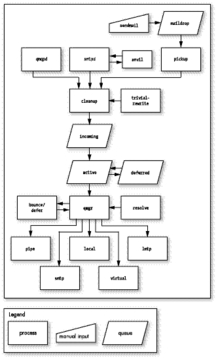

Postfix is a ghastly horror that really should be quietly eliminated. But that truism hides a deeper issue - email itself is a ghastly horror, the result of 30 years of hacks, edge-cases, non-conformant implementations and competing design constraints, that only persists because we still haven't come up with anything better.
Take the simple question 'what is a valid email address'.
I have a couple of standard regexes I use to validate email addresses,
such as ^[A-Z0-9._%+-]+@[A-Z0-9.-]+\.[A-Z]{2,4}$,
but having spent years building mailing systems,
the best answer I can come up with is
a valid email address is one that gets delivered to its destination.
So, Postfix. If you ever need a taste of purgatory, take some time to browse through
the source code, a terrifying mix of old-school C and Perl. I once needed to create
a utility to monitor the state of a Postfix DEFERRED queue, and found it was vastly
easier to write my own queue parser in Python than understand the source to the existing
qshape utility. Whoever wrote that clearly has an aversion to variable names
that are more than one character long.
Actually configuring a functional Postfix system requires commiting yourself to a long pilgrimage across the net, picking up scattered bits of wisdom from the hardy travellers who have passed this way before, and recorded their insights in ancient forgotten blog posts and wiki pages.
Documents such as http://www.howtoforge.com/virtual-users-domains-postfix-courier-mysql-squirrelmail-ubuntu-10.04 include gems like 'this howto is meant as a practical guide; it does not cover the theoretical backgrounds'.
You have been warned, it seems to be saying. Configuring this system really requires at the very least a Masters degree in Advanced Email Hackery.
That image is from this article at Linux Journal, which is actually a pretty good and comprehensive introduction to the architecture of Postfix
The key insight that everything else hangs on is that Postfix is not a program. Postfix is a large collection of programs: some of which interact with the user, and a large number which run in the background and perform all the various tasks of gathering, processing and delivering email.
These programs, together with a rather complex set of folders under /var/spool/postfix that store messages as they work their way through
the system, and another set of rather complex configuration files under /etc/postfix, are what comprises the
complete mail delivery system.
To add to the fun, many postfix configuration settings can be stored in MySQL, and it's possible to run multiple postfix instances in parallel with each other.
$ pstree -a
├─master
│ ├─anvil -l -t unix -u -c
│ ├─pickup -l -t unix -u -c
│ ├─qmgr -l -t unix -u
│ ├─smtpd -n smtp -t inet -u -c -o stress= -s 2
│ ├─smtpd -n smtp -t inet -u -c -o stress= -s 2
│ └─tlsmgr -l -t unix -u -c
├─master
│ ├─anvil -l -t unix -u -c
│ ├─pickup -l -t unix -u -c
│ ├─qmgr -l -t unix -u
│ ├─smtpd -n smtp -t inet -u -c -o stress=
│ └─smtpd -n smtp -t inet -u -c -o stress=
├─master
│ ├─anvil -l -t unix -u -c
│ ├─pickup -l -t unix -u -c
│ ├─qmgr -l -t unix -u
│ ├─smtpd -n smtp -t inet -u -c -o stress=
│ └─smtpd -n smtp -t inet -u -c -o stress=
├─master
│ ├─anvil -l -t unix -u -c
│ ├─pickup -l -t unix -u -c
│ ├─qmgr -l -t unix -u
│ ├─smtpd -n smtp -t inet -u -c -o stress=
│ └─smtpd -n smtp -t inet -u -c -o stress=
├─master
│ ├─anvil -l -t unix -u -c
│ ├─pickup -l -t unix -u -c
│ ├─qmgr -l -t unix -u
│ ├─smtpd -n smtp -t inet -u -c -o stress=
│ └─smtpd -n smtp -t inet -u -c -o stress=
That's a lot of processes....
And yet, despite this, Postfix seems to be about the best there is. Over the last few years I've built and maintained a massively parallel mail delivery, management and monitoring system on top of Postfix that, at the last count, had successfully delivered almost 10 million messages for clients of Nooro Online Research.